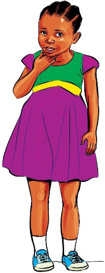

3.
Tunga sentensi kwa kutumia maneno haya:
nyumba
umwa
kwenda
kwaheri
kuimba
ngoma
Mfano: Mama amejenga nyumba nzuri.
Shughuli ya kwanza
Igiza na mwenzako mazungumzo ya Mboza na Ngaida.
Kusoma hadithi
Soma hadithi ifuatayo, kisha fanya zoezi linalofuata.
Mbalu aacha uchafu
Hapo zamani kulikuwa na watoto wawili. Waliitwa Mbalu na Nandera. Wazazi wao waliwapenda sana. Wote wanasoma darasa la pili. Waliishi mtaa wa Mwambao, Kijiji cha Maendeleo. Nandera alipenda kuwa msafi wakati wote. Mara nyingi, alifua nguo kwa maji na sabuni. Kila siku asubuhi, alioga na kupiga mswaki. Alivaa nguo safi za shuleni na za nyumbani.
